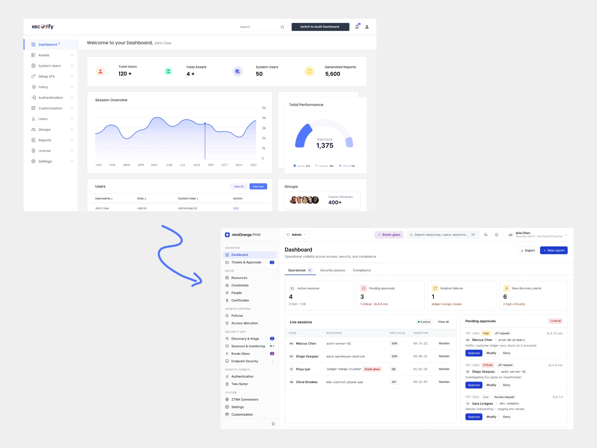
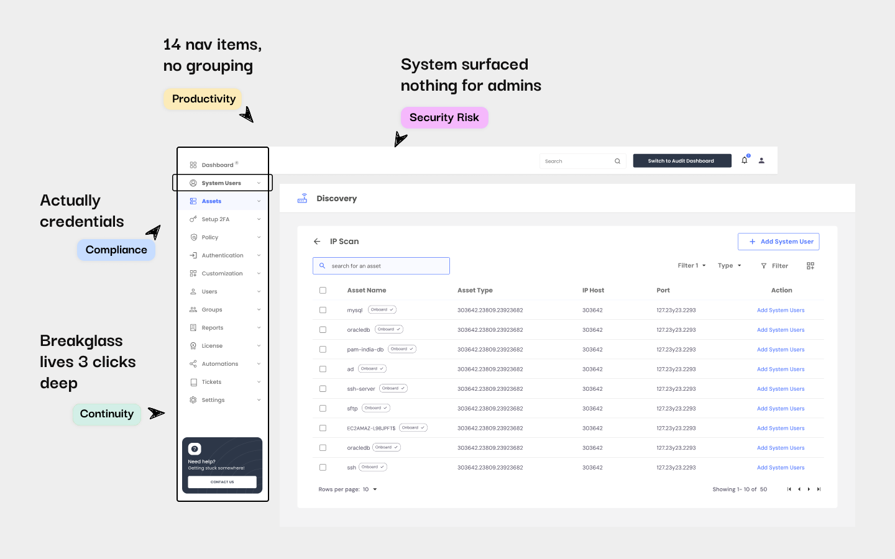

Rebuilding a Privileged Access Management product around real admin workflows. Seven months, four personas, 140 usability issues, and $800K in stalled deals unlocked post-launch.

miniOrange's PAM product had all the features a security buyer would ask about on a discovery call. Vaulting, session recording, access policies, discovery, MFA. When our AEs walked prospects through the feature list, the product looked competitive against CyberArk and Delinea.
Then the prospect would start a POC, and their admin would open the product for the first time, and the deal would slow down.
Our left nav had 14 items, sitting flat, with no grouping that matched how anyone actually worked. Setting up a single privileged workflow meant jumping between three or four sections that didn't know about each other. Object names contradicted what admins meant when they said them out loud. "System Users" was where we stored credentials. Users lived somewhere else. Discovery would find 200 accounts and then leave the admin to figure out what to do with them. When things broke, they broke quietly.
The capabilities that actually close enterprise PAM deals — JIT access, emergency break glass, session OCR, reconciliation — were either missing or buried three clicks deep behind labels no one recognised. Our own SEs would sometimes ask me where a feature was during demo prep.
The pieces were all there. Nothing held them together.

In consumer software, bad UX costs engagement metrics. In PAM, it costs the entire security posture. That's not a design argument — it's a risk argument.
The core paradox of Privileged Access Management: the harder it is to use, the less secure it makes you. Admins under deadline pressure don't file tickets when a workflow is broken. They route around it. A DevOps engineer who can't get JIT access provisioned in under a minute will just use their standing admin credentials. An IT ops lead who can't find the break glass screen during a Sev 1 will share passwords over Slack. Every workaround is a shadow credential. Every shadow credential is an audit finding waiting to happen.
This was the actual business problem. Not "the product is hard to use." The product was creating security risk by being hard to use. DevOps teams were bypassing PAM controls entirely for time-sensitive work. Compliance customers were failing audit prep because the product couldn't surface clean audit-ready evidence without manual export work. Enterprise deals were stalling not because buyers didn't want the product, but because their admins couldn't get it set up inside a trial window.
Bad UX in a consumer product costs you engagement metrics. Bad UX in PAM becomes a breach.
"If security feels like friction, teams route around it — and the system fails."
The instinct on a project like this is to pick the worst screens and redesign them. I pushed back on that for two weeks, because I was fairly sure that redesigning individual screens would just move the confusion around rather than resolve it.
I ran a scenario-driven UX audit across the existing product first. Not happy-path click-throughs. Real operational scenarios pulled from CS call recordings and support tickets: onboarding a new admin on day one, break glass elevation during a Sev 1 incident, credential rotation across 200+ accounts, offboarding a departing engineer with shared credentials, walking a compliance officer through a 90-day activity log the morning before an audit.
Ten scenarios. Four personas: Security Admins, IT Operations, DevOps and SysAdmins, Compliance Officers. Over 140 discrete usability issues surfaced — which I then clustered into four systemic root causes. The audit took three weeks. It was the whole project, really. Everything after it was execution.
14 flat nav items, no task based grouping. Admins had to know the product's internal object model to find anything.
Object names didn't match the mental model of any persona. Every new admin spent their first week translating the interface before they could use it.
Critical paths like JIT, approvals, break glass either didn't exist or required jumping between disconnected sections.
Errors weren't surfaced. Discovery surfaced data but didn't guide action. Admins couldn't tell what broke or what to do next.
The ten audit scenarios
SC.01 and SC.02 highlighted as deal-breaker scenarios
The PM wanted to run a Kano exercise. The eng lead wanted RICE scoring. We'd been through two prioritization frameworks in the previous quarter and gotten different outputs both times with no consensus on what to build next. I suggested we try something blunter.
I identified five deal-breaker capabilities: the features that, if absent or broken, would lose us an enterprise deal regardless of everything else. Vault & Rotation. Discovery & Inventory. Session Proxying & Recording. Access Governance (RBAC, JIT, approval workflows). Integrations & Auditability. Then I asked one binary question about every item in the proposed backlog: does this directly strengthen one of those five capabilities, or doesn't it?
A meaningful slice of the backlog got deferred in two days of alignment. The PM was skeptical that it was too blunt an instrument. Three sprints in, he said it was the most useful prioritization tool we'd used on the product.
Three architectural decisions that changed what the product felt like to use — not just what it looked like.
The original nav was organized by internal database object: System Users, Groups, Certificates, Resources, Policies. An admin who wanted to set up break glass had to know that "break glass" was a policy type that lived inside a resource that you configured under Policies. The redesign organizes by what the admin is trying to do: Overview, Setup, Access Control, Security Ops, Identity Config. Break glass lives under Security Ops. A new admin who has never used the product can find it on day one without opening the docs.
The reconciliation design was the decision I'm most proud of. Reconciliation — syncing credentials after a rotation event — was previously a multi-page workflow that required the admin to navigate through four separate screens. During an incident at 2am, this was genuinely dangerous. I embedded reconciliation inline in the credential tab, surfacing the mismatch status directly next to the credential record with a single-action resolution. An admin managing 200 accounts can reconcile a failed rotation in one screen without losing their place in the inventory. The tabbed resource workspace (Credentials, Policy, Access, Sessions, Audit) all scope to the resource the admin is working on.
New admin onboarding was previously a setup wizard — a linear sequence with no checkpoints and no clear sense of progress. Admins couldn't tell when they were done. I redesigned it as six discrete stages: Discover, Inventory, Policy, Roles, Provision, Access. Each stage produces a concrete, auditable output: a discovered account list, a configured policy, a role assignment. You know you've completed a stage when you have something to show for it. This also solved the POC stalling problem. An admin starting a trial can reach a meaningful test state — active session proxying, working JIT, real RBAC policies — within the first day.
The v1 shipped as a coherent platform, not a feature list. Most importantly: it shipped. That sounds like a low bar, but this product had been in partial redesign for over a year before I joined. The audit and the binary prioritization filter gave us something we hadn't had — a shared definition of done.
What I'd do differently: I'd push for a non-linear onboarding path earlier. The six-stage model worked well for net-new deployments, but customers migrating from a legacy PAM tool had a different mental model and kept trying to skip stages. We shipped a v1.2 patch three months later to address this — I should have caught it in the persona research.
I've worked on products where the research phase is a checkbox before the real work starts. On this one, the three-week scenario audit was the most leveraged thing I did. It gave the entire team a shared, specific, evidence-based picture of what was broken and why. Every design decision after it was implementation of conclusions we'd already reached together. If I'd skipped it and gone straight to wireframes, I'd have spent the next six months relitigating the same scope arguments everyone had already been having for a year.
RICE scoring and Kano models failed on this project not because they're bad frameworks, but because the team was using them to avoid a conversation about values — what do we actually think matters for this product right now. The binary deal-breaker filter worked because it forced that conversation first and then gave it a concrete output. The filter was the excuse to have the alignment meeting we'd been avoiding.
This is the thing I'll carry into every security product I work on. The product that is easy to use correctly is more secure than the product with better security features that is hard to use. Every time a PAM admin routes around a broken workflow with a workaround, that workaround is a shadow credential, which is a compliance gap, which is a potential breach. The UX isn't decoration on top of the security model. It's load-bearing.